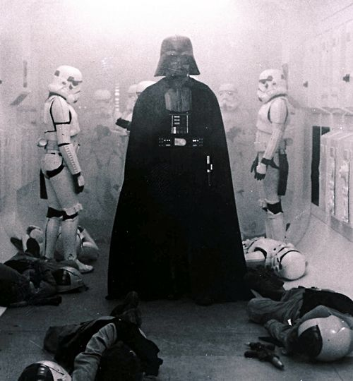

La adultez de Anakin
Bibliografia
Presentacion
Soon thereafter, Vader saw Amidala's star skiff land and ran to meet her. She told Vader that Kenobi had discovered their secret and had also told her that Vader had joined the dark side, hoping that he'd prove Kenobi wrong. However, Vader only confirmed it to be true. Driven power-hungry by the Dark Side and declaring the galaxy was at peace, Vader tried to convince her that they could be happy together as rulers of the new Empire, promising he could overthrow Sidious. In Vader's ideal world, Amidala would have taken his hand, believing the man before her was still her husband. In reality, however, Vader's propositions and actions horrified his wife, who begged him to leave the dark side behind
Inicio Adolescencia Infancia